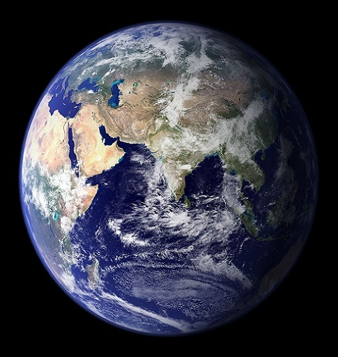
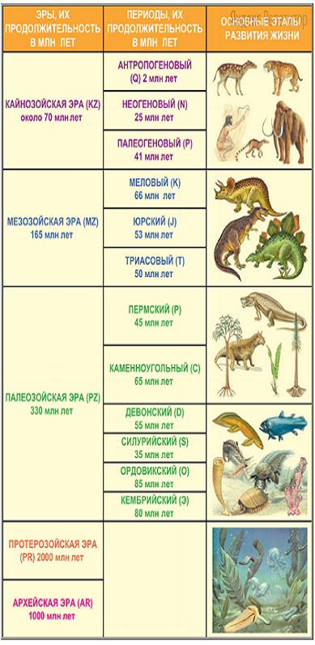

Основные ведомости о планете Земля
Земля́ — третья по удалённости от Солнца планета Солнечной системы. Самая плотная, пятая по диаметру и массе среди всех планет и крупнейшая среди планет земной группы, в которую входят также Меркурий, Венера и Марс. Единственное известное человеку в настоящее время тело Солнечной системы в частности и Вселенной вообще, населённое живыми организмами.
В публицистике и научно-популярной литературе могут использоваться синонимические термины — мир, голубая планета, Терра(от лат. Terra).
Соотношение суши/воды
Приблизительно 70,8 % поверхности планеты занимает Мировой океан, остальную часть поверхности занимают континенты и острова. На материках расположены реки, озёра, подземные воды и льды, которые вместе с Мировым океаном составляют гидросферу. Жидкая вода, необходимая для всех известных жизненных форм, не существует на поверхности какой-либо из известных планет и планетоидов Солнечной системы, кроме Земли. Полюсы Земли покрыты ледяным панцирем, который включает в себя морской лёд Арктики и антарктический ледяной щит.
Процесс генерации
Научные данные указывают на то, что Земля образовалась из солнечной туманности около 4,54 миллиарда лет назад,и,вскоре после этого, обрела свой единственный естественный спутник — Луну. Жизнь, предположительно, появилась на Земле примерно 4,25 млрд лет назад.

История жизни на Земле началась с момента появления первого живого существа — 3,7 миллиарда лет назад — и продолжается по сей день. Сходство между всеми организмами указывают на наличие общего предка, от которого произошли все другие живые существа.
Цианобактериальные маты и археи были доминирующей формой жизни в начале архейского эона и явились огромным эволюционным шагом того времени. Кислородный фотосинтез, появившийся около 2500 миллионов лет назад, в конечном итоге привёл к оксигенации атмосферы, которая началась примерно 2400 млн лет назад. Самые ранние свидетельства эукариот датируются 1850 млн лет назад, хотя, возможно, они появились ранее — диверсификация эукариот ускорилась, когда они начали использовать кислород в метаболизме. Позже, около 1700 млн лет назад, стали появляться многоклеточные организмы с дифференцированными клетками для выполнения специализированных функций.
Примерно 1200 млн лет назад появляются первые водоросли, а уже примерно 450 млн лет назад — первые высшие растения[28]. Беспозвоночные животные появились в эдиакарском периоде, а позвоночные возникли около 525 миллионов лет назад во время кембрийского взрыва.
Во время пермского периода из крупных позвоночных преобладали синапсиды — возможные предки млекопитающих, но события пермского вымирания (251 млн лет назад) уничтожили 96 % всех морских видов и 70 % наземных видов позвоночных, в том числе и синапсидов. В периоде восстановления после этой катастрофы, архозавры стали наиболее распространёнными наземными позвоночными и вытеснили терапсид в середине триаса. В конце триаса архозавры дали начало динозаврам, которые доминировали в течение юрского и мелового периодов. Предки млекопитающих в то время представляли собой небольших насекомоядных животных. После мел-палеогенового вымирания 65 миллионов лет назад все динозавры вымерли, оставив после себя произошедшую от них эволюционную ветвь — птиц. После этого млекопитающие стали быстро увеличиваться в размерах и разнообразии, так как теперь им почти никто не составлял конкуренцию. Такие массовые вымирания, возможно, ускоряли эволюцию путём предоставления возможности новым группам организмов к диверсификации.
Ископаемые остатки показывают, что цветковые растения появились в раннем меловом периоде (130 миллионов лет назад) и, вероятно, помогли эволюционировать опыляющим насекомым. Социальные насекомые появились примерно в то же время, что и цветковые растения. Хотя они занимают лишь небольшую часть «родословной» насекомых, в настоящее время они составляют более половины их общего количества.
Люди являются одними из приматов, начавших ходить вертикально, около 6 млн лет назад. Хотя размер мозга их предков был сравним с размером мозга других гоминид, например, шимпанзе, он начал увеличиваться 3 млн лет